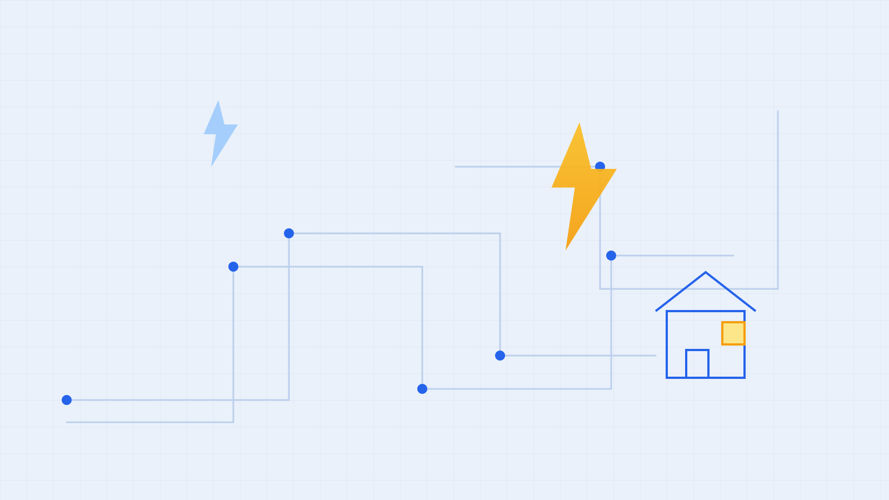

Instalaciones eléctricas
- Trabajos eléctricosConsultas por instalaciones para tu vivienda o comercio. Contame qué necesitás hacer para evaluar el trabajo.

Servicio técnico en Tucumán
Instalación y reparación para tu hogar o comercio. Atención en San Miguel de Tucumán y Yerba Buena, con consultas y coordinación directa por WhatsApp.
Lunes a viernes · 8:00 a 19:00 | Sábados · 9:00 a 14:00
Un contacto para resolver tus consultas y coordinar el trabajo.
¿No sabés qué servicio necesitás? Contame tu consulta.
Preparar una consultaEscribime por WhatsApp y describí el trabajo o la falla. Si tenés fotos, podés adjuntarlas en el chat.
Indicá tu zona y los datos del equipo o de la instalación para evaluar cómo avanzar.
Acordamos disponibilidad, alcance y presupuesto directamente antes de realizar el trabajo.
Servicios en San Miguel de Tucumán y Yerba Buena.
Electricidad e instalación y reparación de aire acondicionado.
Consultá disponibilidad y coordiná el servicio en tu zona.
Gral. José de San Martín 1800, Yerba Buena, Tucumán.
Para coordinar atención, comunicate previamente por teléfono o WhatsApp.
En San Miguel de Tucumán y Yerba Buena. Al consultar, indicá tu zona para coordinar disponibilidad.
La marca y el modelo, si los conocés, tu zona y si necesitás instalación o reparación. En caso de falla, contame qué sucede; podés enviar fotos por WhatsApp.
Podés llamar, escribir por WhatsApp o completar el formulario. Los detalles, el alcance y el presupuesto se coordinan directamente según cada trabajo.
Lunes a viernes de 8:00 a 19:00 y sábados de 9:00 a 14:00. Domingos cerrado. Los turnos se coordinan según disponibilidad.
Completá los datos para preparar tu consulta. Se abrirá WhatsApp para que revises el mensaje y lo envíes al técnico.